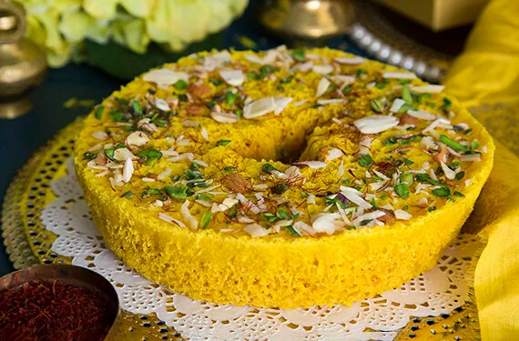

जैसलमेर क्या है?
जैसलमेर भारत के पश्चिमी राजस्थान में स्थित एक प्रसिद्ध शहर है। यह रेतीले मरुस्थल के किनारे स्थित है और अपने रेतीले किले और एकाधिक रंगीन हवेलियों के लिए प्रसिद्ध है। इस शहर को "सोनार किला" के नाम से भी जाना जाता है क्योंकि सूरज के किरणों के संघर्ष में, इसके पत्थर अपने अलग-अलग रंग में चमकते हैं। जैसलमेर राजस्थान की प्रमुख पर्यटन गतिविधियों में से एक है। यहां का खास भोजन और कला भी अपने आप में अनूठा है।
राजस्थानी लोक नृत्य
घूमर
यह राजस्थान का एक पारंपरिक लोक नृत्य है. इसे भील जनजाति ने मां सरस्वती की आराधना के लिए विकसित किया था. इसमें लोक गीत गाते समय सुंदर हरकतें, हाथ हिलाना, घूमना और लयबद्ध ताली बजाना शामिल है. इसे खासकर होली और तीज के दौरान महिलाएं करती हैं. कलाकार पारंपरिक नृत्य पोशाक पहनते हैं, जिसमें घाघरा नामक एक घूमती हुई स्कर्ट, एक ब्लाउज (चोली), और एक ओढ़नी (घूंघट) शामिल है.

तेरह ताली
तेरह ताली एक पारंपरिक लोक नृत्य है जो भारतीय राजस्थान का अनूठा और मनमोहक हिस्सा है। इस नृत्य को महिलाएं खासकर विशेष अवसरों और उत्सवों में प्रस्तुत करती हैं। "तेरह ताली" का अर्थ है "बारह तालियों की ध्वनि"। इस नृत्य में कलाकार अपने हाथों को तालियाँ बजाते हैं, जबकि उनके उंगलियों से छोटे झिंगुरी को भी बजाते हैं। यह नृत्य संगीतमयता, गतिशीलता और छायाचित्र बनाता है, जिससे दर्शकों को आनंद और हर्ष का अनुभव होता है। इसमें समर्थन, संघटन और सामंजस्य दिखाने के लिए विभिन्न रचनात्मक और आरम्भिक तत्व होते हैं। तालियों की मेल के साथ, छोटे झिंगुरियों की ध्वनि और हाथों की गतिविधि एक रंगीन और आकर्षक दृश्य बनाती हैं। तेरह ताली नृत्य का महत्वपूर्ण भाग है जो भारतीय संस्कृति की धरोहर को नया जीवन देता है और समृद्धि का प्रतीक है।

कालबेलिया
कालबेलिया नृत्य राजस्थान का एक प्रसिद्ध लोक नृत्य है। इस नृत्य को कलबेलिया जाति के लोग प्रस्तुत करते हैं, जो साँपों को सांप बजाने का काम करते थे। इस नृत्य में कलाकारों की हरकतें और अंगों के गतिविधि बड़ी छवियों को याद दिलाती हैं। वे अपने शानदार रंगीन वस्त्रों में तेज गतियों और साँप के जैसे आंगन के साथ नृत्य करते हैं। कलबेलिया नृत्य में मूल रूप से जीवन की धारा, स्वतंत्रता और खुशी का संदेश होता है।
राजस्थान का खाना
दाल बाटी चूरमा

दाल बाटी चूरमा राजस्थान की प्रसिद्ध खाने की प्रथा है। यह एक स्वादिष्ट और पौष्टिक भोजन है जो आमतौर पर खास अवसरों पर बनाया जाता है। दाल बाटी चूरमा में तीनों अलग-अलग प्रकार के खाद्य होते हैं। पहला है दाल, जो पौष्टिकता और स्वाद मिलाता है। दूसरा है बाटी, जो अंगीठे जैसा आकार होता है और गरम घी में पकाया जाता है। तीसरा है चूरमा, जो क्रिस्पी और खस्ता होता है और जिरा या गरम मसाले के साथ परोसा जाता है। यह खाना न केवल स्वादिष्ट होता है बल्कि पौष्टिक भी होता है और उत्तम प्रकार का भोजन माना जाता है।
घेवर
घेवर एक पारंपरिक भारतीय मिठाई है, जो खासकर राजस्थान और हरियाणा में बहुत प्रसिद्ध है। यह गोल, डिस्क के आकार की मिठाई होती है, जिसे आटे, घी और पानी के घोल से बनाया जाता है। घेवर बनाने के लिए इस घोल को घी में गहरा तला जाता है, जिससे यह शहद के छत्ते जैसी बनावट में तैयार होता है। तला हुआ घेवर फिर चीनी की चाशनी में डुबोया जाता है और ऊपर से केसर, इलायची, मेवे (जैसे बादाम और पिस्ता) और चांदी के वर्क से सजाया जाता है। घेवर विशेष रूप से तीज और राखी के त्योहारों पर बहुत लोकप्रिय है। घेवर के विभिन्न प्रकार होते हैं, जैसे सादा घेवर, मावा (जो दूध के ठोस पदार्थ से बना होता है) और मलाई घेवर। यह मिठाई अपनी अनोखी बनावट और मीठे स्वाद के लिए जानी जाती है, जो उत्तरी भारत के त्योहारों में एक खास स्थान रखती है।
केर सांगरी

केर सांगरी एक पारंपरिक राजस्थानी व्यंजन है, जो मुख्यतः राजस्थान के मरुस्थलीय क्षेत्रों में बहुत लोकप्रिय है। यह दो मुख्य सामग्री, केर (एक प्रकार की जंगली बेरी) और सांगरी (कांटेदार पेड़ की फलियाँ) से बनाई जाती है। ये सामग्री सूखी होती हैं और इन्हें पानी में भिगोकर नरम किया जाता है। केर सांगरी बनाने के लिए भिगोई हुई केर और सांगरी को तेल में मसालों के साथ पकाया जाता है। इसमें आमतौर पर लाल मिर्च, धनिया पाउडर, हल्दी, और हींग जैसे मसाले डाले जाते हैं। कभी-कभी इसमें आमचूर (सूखा आम पाउडर) भी डाला जाता है, जो इसे खट्टा-मीठा स्वाद देता है। यह व्यंजन स्वाद में तीखा और मसालेदार होता है, और इसे चपाती या बाजरे की रोटी के साथ खाया जाता है। केर सांगरी न केवल स्वादिष्ट होती है, बल्कि लंबे समय तक खराब भी नहीं होती, जिससे यह रेगिस्तानी क्षेत्रों के लिए एक आदर्श भोजन है।
राजस्थान का इतिहास
राजस्थान, जिसे पहले राजपुताना के नाम से जाना जाता था, भारत का एक ऐतिहासिक और सांस्कृतिक रूप से समृद्ध राज्य है। राजस्थान का इतिहास वीरता, शौर्य और रजवाड़ों की गौरवशाली कहानियों से भरा हुआ है। प्राचीन इतिहास: राजस्थान के प्राचीन इतिहास में मेवाड़, मारवाड़, हाड़ौती और शेखावाटी जैसे प्रमुख क्षेत्र आते हैं। यहां हड़प्पा सभ्यता के अवशेष भी मिले हैं, जो इस क्षेत्र की प्राचीनता को दर्शाते हैं। राजस्थान का प्राचीन नाम 'राजपूताना' पड़ा, क्योंकि यहां राजपूत राजा राज्य करते थे। मध्यकालीन इतिहास: मध्यकाल में राजस्थान के राजाओं ने अपनी वीरता और साहस से कई लड़ाइयाँ लड़ीं। प्रमुख राजपूत राजवंशों में मेवाड़ के राणा, मारवाड़ के राठौड़, आमेर के कछवाहा, और बीकानेर के राठौड़ शामिल थे। चित्तौड़ के महाराणा प्रताप और उनके हल्दीघाटी युद्ध की कहानी बहुत प्रसिद्ध है। रानी पद्मिनी की जौहर कथा और जोधा अकबर की कहानी भी राजस्थान की संस्कृति और इतिहास का हिस्सा हैं। मुगल और ब्रिटिश काल: मुगल सम्राट अकबर ने राजपूतों के साथ वैवाहिक संबंध स्थापित कर और राजनीतिक गठबंधन कर राजस्थान पर अपना प्रभाव बढ़ाया। मुगलों के बाद, ब्रिटिश शासन के समय राजस्थान के राजाओं ने ब्रिटिशों के साथ संधियाँ कीं, जिससे राजपूताना ब्रिटिश रियासत बन गया। स्वतंत्रता संग्राम और आधुनिक युग: भारतीय स्वतंत्रता संग्राम के दौरान भी राजस्थान के वीरों ने महत्वपूर्ण भूमिका निभाई। 1947 में भारत की आजादी के बाद, राजस्थान के विभिन्न रजवाड़ों का विलय कर वर्तमान राजस्थान राज्य का निर्माण हुआ। 30 मार्च 1949 को राजस्थान को एक एकीकृत राज्य के रूप में स्थापित किया गया। राजस्थान अपनी समृद्ध सांस्कृतिक धरोहर, किलों, महलों, और लोक कला के लिए विश्व प्रसिद्ध है। जयपुर का हवा महल, उदयपुर का सिटी पैलेस, और जैसलमेर का सोनार किला कुछ प्रमुख आकर्षण हैं। यहाँ के लोक नृत्य, संगीत और हस्तशिल्प भी अद्वितीय हैं, जो राजस्थान की संस्कृति की जीवंतता को दर्शाते हैं।